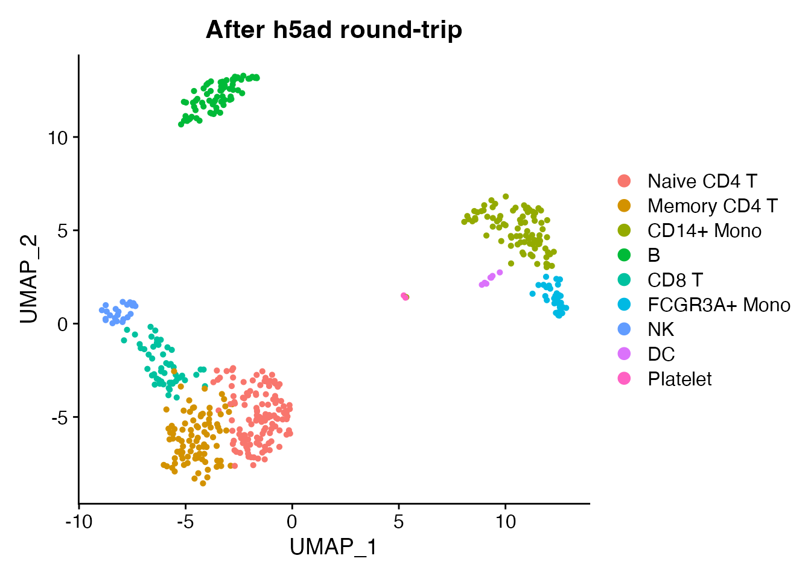

Overview
scConvert routes all conversions through Seurat as the universal intermediate. This reference documents how Seurat components map to each supported file format.
Quick example
obj <- readRDS(system.file("extdata", "pbmc_demo.rds", package = "scConvert"))
# Convert to h5ad and back
h5ad_path <- tempfile(fileext = ".h5ad")
writeH5AD(obj, h5ad_path, overwrite = TRUE, verbose = FALSE)
obj_rt <- readH5AD(h5ad_path, verbose = FALSE)
#> Warning: Layer 'data' is empty
cat("Original:", ncol(obj), "cells x", nrow(obj), "genes\n")
#> Original: 500 cells x 2000 genes
cat("Round-trip:", ncol(obj_rt), "cells x", nrow(obj_rt), "genes\n")
#> Round-trip: 500 cells x 2000 genes
cat("Reductions preserved:", paste(names(obj_rt@reductions), collapse = ", "), "\n")
#> Reductions preserved: pca, umap
DimPlot(obj_rt, reduction = "umap", group.by = "seurat_annotations") +
ggplot2::ggtitle("After h5ad round-trip")
Preservation summary
What survives conversion across all formats:
| Component | h5ad | h5Seurat | h5mu | Loom | Zarr | RDS |
|---|---|---|---|---|---|---|
| Expression (counts) | Y | Y | Y | Y | Y | Y |
| Expression (data) | Y | Y | Y | Y | Y | Y |
| Cell metadata | Y | Y | Y | Y | Y | Y |
| Feature metadata | Y | Y | Y | partial | Y | Y |
| PCA/UMAP/t-SNE | Y | Y | Y | Y | Y | Y |
| Neighbor graphs | Y | Y | Y | Y | Y | Y |
| Variable features | Y | Y | Y | – | Y | Y |
| Spatial images | Y | Y | – | – | Y | Y |
| Scale data | – | Y | – | Y | – | Y |
| Command log | – | Y | – | – | – | Y |
Y = preserved, – = not supported or lost in conversion.
Seurat to h5ad
| Seurat Component | h5ad Location | Notes |
|---|---|---|
GetAssayData(layer = "data") |
X |
Primary matrix (log-normalized) |
GetAssayData(layer = "counts") |
raw/X |
Raw counts |
VariableFeatures() |
var['highly_variable'] |
Boolean column |
meta.data |
obs |
Factors become categoricals |
meta.features |
var |
Gene-level metadata |
Embeddings(, "pca") |
obsm['X_pca'] |
PCA coordinates |
Embeddings(, "umap") |
obsm['X_umap'] |
UMAP coordinates |
Graphs(, "RNA_snn") |
obsp['connectivities'] |
SNN graph |
Graphs(, "RNA_nn") |
obsp['distances'] |
KNN distances |
| Spatial coordinates | obsm['spatial'] |
Tissue positions |
| Spatial images | uns['spatial'][lib]['images'] |
H&E images |
| Scale factors | uns['spatial'][lib]['scalefactors'] |
Visium scaling |
misc |
uns |
Unstructured metadata |
Notes: Scale data is not stored in h5ad (recompute
with ScaleData() or sc.pp.scale()). Data (all
genes) is written to X; scale.data (variable features only)
is skipped.
h5ad to Seurat
| h5ad Location | Seurat Destination | Notes |
|---|---|---|
X |
data layer |
Log-normalized expression |
raw/X |
counts layer |
Raw counts (if present) |
obs |
meta.data |
Categoricals become R factors |
var |
Feature metadata | All columns preserved |
var['highly_variable'] |
VariableFeatures() |
Boolean TRUE = variable |
obsm/X_pca |
reductions$pca |
Auto-detected by prefix |
obsm/X_umap |
reductions$umap |
Auto-detected by prefix |
obsm/X_tsne |
reductions$tsne |
Auto-detected by prefix |
obsm/spatial |
Spatial coordinates | Via spatial handler |
obsp/connectivities |
graphs$RNA_snn |
SNN graph |
obsp/distances |
graphs$RNA_nn |
KNN distances |
uns |
misc |
Unstructured annotations |
Seurat to h5Seurat
The mapping is 1:1 since h5Seurat is the native format:
| Seurat Component | h5Seurat Path |
|---|---|
| Assay counts |
/assays/RNA/counts (sparse) |
| Assay data |
/assays/RNA/data (sparse) |
| Scale data |
/assays/RNA/scale.data (dense) |
| Features | /assays/RNA/features |
| Variable features | /assays/RNA/variable.features |
| Cell metadata | /meta.data |
| PCA embeddings | /reductions/pca/cell.embeddings |
| UMAP embeddings | /reductions/umap/cell.embeddings |
| SNN graph |
/graphs/RNA_snn (sparse) |
| Spatial images |
/images/{name} (S4 object) |
| Misc | /misc |
Everything is preserved exactly, including command logs and tool results.
Seurat to h5mu (MuData)
Each Seurat assay becomes a separate modality:
| Seurat Component | h5mu Location |
|---|---|
| Each assay | /mod/{modality}/ |
| Assay counts | /mod/{modality}/X |
| Assay features | /mod/{modality}/var |
| Cell metadata |
/obs (global) |
| Per-modality metadata | /mod/{modality}/obs |
Modality name mapping:
| Seurat Assay | h5mu Modality |
|---|---|
| RNA | rna |
| ADT | prot |
| ATAC | atac |
| Spatial | spatial |
| SCT | sct |
| Other | lowercase name |
The reverse mapping applies when reading h5mu files.
Seurat to Loom
| Seurat Component | Loom Location |
|---|---|
| Default assay data |
/matrix (genes x cells, transposed) |
| Counts | /layers/counts |
| Cell barcodes | /col_attrs/CellID |
| Gene names | /row_attrs/Gene |
meta.data columns |
/col_attrs/* |
meta.features |
/row_attrs/* |
| Embeddings | /col_attrs/reduced_dims_* |
| Graphs | /col_graphs/* |
Limitations: Variable features and PCA standard deviations are not natively supported in Loom. Feature metadata columns are flattened to row attributes.
Seurat to Zarr
The Zarr format follows the AnnData/h5ad layout but uses Zarr storage:
| Seurat Component | Zarr Location |
|---|---|
| Data layer |
/X (sparse group) |
| Counts | /raw/X |
| Cell metadata | /obs |
| Feature metadata | /var |
| Embeddings |
/obsm/X_pca, /obsm/X_umap
|
| Graphs |
/obsp/connectivities, /obsp/distances
|
| Misc | /uns |
Zarr uses the same slot mapping as h5ad. Direct streaming converters
(H5ADToZarr(), ZarrToH5AD(), etc.) transfer
data without constructing a Seurat object in memory.